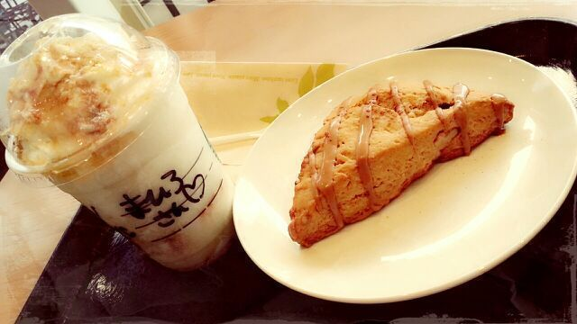

はい ♪ 皆こんにちわ〜
ろってぃ-でちゅう. ぁ
いつかのホテルにて
『 パシャリッ☆』とね...
帽子とブーツは 大好き !!
この季節には欠かせない *^^*
それと最近は濃いグレーの使ってるけどもっと寒くなってきたら
一回り 分厚いのを首に巻く。
ぁ、
まあや♪のこと思い出した*^^*
まあやはね、本当 人を喜ばすのが
上手でね、でも あれなの、
表上じゃあなくって
素直に思ったことを口にしてくれてるってのが伝わってくるんだよね。
しょっちゅう褒めてくれるの(*´ω｀*)
乃木どこの「初恋の人を今でも」の収録した日も
「Rottyちゃんは 今日もオシャレだねっ(*^^*)」って笑顔で言ってくれて
心の底から「まあや、ありがとね(^-^)」って言いまちた.
１日の疲れなんか ふっとんでまうわ。あは♪
はいっ、 それにちなんで
もひとつ Rottyちゃんの心を癒してくれるものぉ〜 それは、

カフェ。 スタバ
Rotty, なかなかのスタバファンでチュ.
日本以外のスタバに行きたい*^^
スタバの新メニューを考えたい*^^
気さくなスタバの店員さんが大好き*^^
それと 最近は 会社にあるカプチーノが
大好きです.♪
ぴょん、、、
そして 昨日は ゆうりと大阪にて
CYCLE MODE international 2013のトークショー ☆をやってきました！
最近はオシャレな自転車が増えてきてるんだねぇぇ.
確かに 町で 自転車かっこよく乗りこなしてる人 見る見る。
楽しちかったです!
来てくださった皆様 本当にありがとうございました!
大阪... お好み焼き、たこ焼食べました！
その後は 滋賀FMに移動し
ラジオ収録してきまちた！
ではではっ、今日は 日曜日ですね＼(^o^)／
皆は どんな１日を過ごすのかあ？
ではねん ぐっばい♪ らぶ